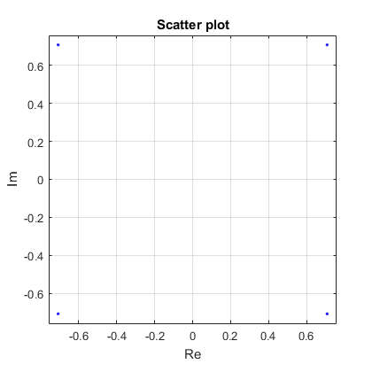
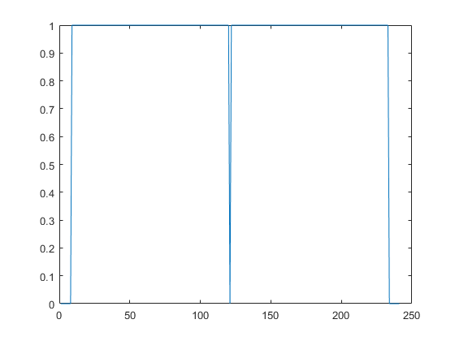
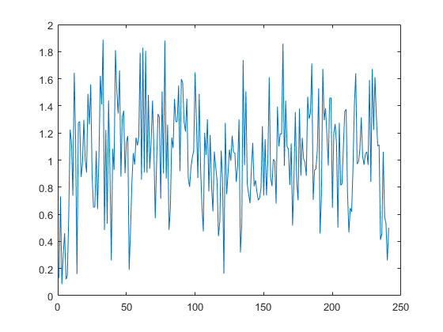
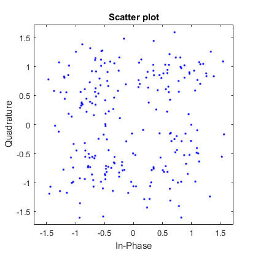
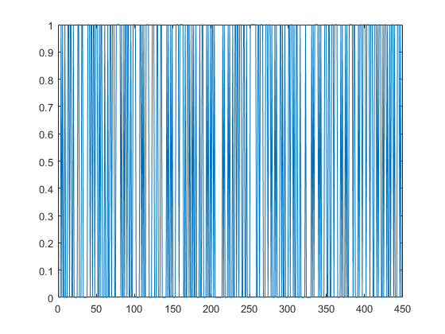
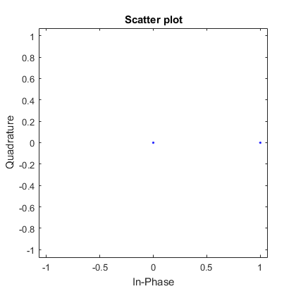

Contents
% https://portal.3gpp.org/desktopmodules/Specifications/SpecificationDetails.aspx?specificationId=2719 % % Description of physical layer parameters on the page 136 in 45820-d10.doc % % https://b.gorelkin.me/documents/N-BCCH/45820-d10.doc % https://b.gorelkin.me/documents/N-BCCH/36212-f40.docx %====================================================================================== %| Payload = 152; | Длина массива (Полезная нагрузка) | %| CRC = 18; | Контрольная сумма 36212-f40-> раздел 5.1.1 "CRC calculation"| %| TailBits = 6; | Защитный интервал (защита от межсимвольной интерференции) | %| N = Payload + CRC; | Итоговая длина массива | %| BIT=randi([0 1],1,N); | Передаваемые данные | %| CP = 20; | Длина цикллического префикса | %======================================================================================= %======================================================================================= %| Payload = 152; | Array length, (informational message) | %| CRC = 18; | Check sum 36212-f40-> Section 5.1.1 "CRC calculation" | %| TailBits = 6; | Guard interval (ISI protection - InterSymbol Interference) | %| N = Payload + CRC; | Итоговая длина массива | %| BIT=randi([0 1],1,N); | Передаваемые данные | %| CP = 20; | Cyclic prefix length | %======================================================================================= clc clear all close all
Generating a message of random numbers (0,1)
Payload = 152; msg = randi([0 1], 1, Payload);
calculation of CRC by polynomial 16 12 5 1
Check sum 36212-f40-> Section 5.1.1 "CRC calculation"
Crc_ui16LookupTable=[0,4129,8258,12387,16516,20645,24774,28903,33032,37161,41290,45419,49548,... 53677,57806,61935,4657,528,12915,8786,21173,17044,29431,25302,37689,33560,45947,41818,54205,... 50076,62463,58334,9314,13379,1056,5121,25830,29895,17572,21637,42346,46411,34088,38153,58862,... 62927,50604,54669,13907,9842,5649,1584,30423,26358,22165,18100,46939,42874,38681,34616,63455,... 59390,55197,51132,18628,22757,26758,30887,2112,6241,10242,14371,51660,55789,59790,63919,35144,... 39273,43274,47403,23285,19156,31415,27286,6769,2640,14899,10770,56317,52188,64447,60318,39801,... 35672,47931,43802,27814,31879,19684,23749,11298,15363,3168,7233,60846,64911,52716,56781,44330,... 48395,36200,40265,32407,28342,24277,20212,15891,11826,7761,3696,65439,61374,57309,53244,48923,... 44858,40793,36728,37256,33193,45514,41451,53516,49453,61774,57711,4224,161,12482,8419,20484,... 16421,28742,24679,33721,37784,41979,46042,49981,54044,58239,62302,689,4752,8947,13010,16949,... 21012,25207,29270,46570,42443,38312,34185,62830,58703,54572,50445,13538,9411,5280,1153,29798,... 25671,21540,17413,42971,47098,34713,38840,59231,63358,50973,55100,9939,14066,1681,5808,26199,... 30326,17941,22068,55628,51565,63758,59695,39368,35305,47498,43435,22596,18533,30726,26663,6336,... 2273,14466,10403,52093,56156,60223,64286,35833,39896,43963,48026,19061,23124,27191,31254,2801,6864,... 10931,14994,64814,60687,56684,52557,48554,44427,40424,36297,31782,27655,23652,19525,15522,11395,... 7392,3265,61215,65342,53085,57212,44955,49082,36825,40952,28183,32310,20053,24180,11923,16050,3793,7920]; ui16RetCRC16 = hex2dec('FFFF'); for i=1:length(msg) ui8LookupTableIndex = bitxor(msg(i),uint8(bitshift(ui16RetCRC16,-8))); ui16RetCRC16 = bitxor(Crc_ui16LookupTable(double(ui8LookupTableIndex)+1),mod(bitshift(ui16RetCRC16,8),65536)); end %crc=dec2hex(ui16RetCRC16); %b = dec2bin(ui16RetCRC16); CRCshort = double((dec2bin(ui16RetCRC16))-48); %CRC can be shorter, so we make an array of zeros z = zeros(1,16); for i = 1 : length(z) if length(CRCshort)<16 CRC = [z(1:(end-length(CRCshort))),CRCshort(1:end)] end if length(CRCshort)==16 CRC = [CRCshort(1:end)] end end clear ui8LookupTableIndex clear ui16RetCRC16 clear Crc_ui16LookupTable clear CRCshort clear z TailBits = 8; %в 3gpp защитный интервал 6 а crc = 18 %Защитный интервал BIT = [msg(1:end),CRC(1:end)]; CP = 20;
Convolutional encoding
encoded with the 1/3 rate convolutional mother code defined by the polynomials: G4 = 1 + D2 + D3 + D5 + D6 G5 = 1 + D + D4 + D6 G6 = 1 + D + D2 + D3 + D4 + D6
This results in a block of 528 coded bits: {C(0),C(1),...,C(527)} defined by: C(3k) = u(k) + u(k 2) + u(k 3) + u(k 5) + u(k 6) C(3k+1) = u(k) + u(k 1) + u(k 4) + u(k 6) C(3k+2) = u(k) + u(k 1) + u(k 2) + u(k 3) + u(k 4) + u(k 6) for k = 0,1,...,175 u(k) = 0 for k < 0
trel = poly2trellis(7,[171 133 165]); % Encoding lattice tblen = TailBits; % Depth of viewing when decoding zero = zeros(1,tblen); BITunited = [BIT,zero];% an array of length tblen was added to the BIT sequence so that no bits are cut off during decoding codeBIT = convenc(BITunited,trel); % Since the rate of the convolutional encoder 1/3 at the output of the message is increased by 3 times (Overcoding)
Puncturing 45820-d10 -> page 137
The code is punctured in such a way that the following 80 coded bits C(23+5j) for j = 0,1,...,79 are not transmitted.
Jpuncturing=1:80;
C=23+5*Jpuncturing;
codeBIT_punct = codeBIT;
codeBIT_punct (C)=[];
% The result is a block of 448 coded and punctured bits, P(0)...P(447).
Interleaving:
The encoded bits are interleaved over 16 N-BCCH bursts as per the below interleaving scheme.
%for (k= 0 to 447) % { % B=mod(12*k+floor(k/2)+mod(k,2),16); % j=mod(23*mod(5*k,28)+ floor(7*k/16),28); % } zer16x28 = zeros(16,28); for k = 1:448; B=mod(12*(k-1)+floor((k-1)/2)+mod((k-1),2),16); j=mod(23*mod(5*(k-1),28)+ floor(7*(k-1)/16),28); B=B+1; j=j+1; inter(B,j)= codeBIT_punct(k); %Matrix Bxj for interleaving end Interleaving = reshape (inter', 1,448); y = Interleaving;
Modulator
for i = 1 : length(y) / 2 if y(2*(i-1)+1)==1 && y(2*i)==1 outmod(i)=0.707+1i*0.707; end if y(2*(i-1)+1)==1 && y(2*i)==0 outmod(i)=-0.707+1i*0.707; end if y(2*(i-1)+1)==0 && y(2*i)==0 outmod(i)=-0.707-1i*0.707; end if y(2*(i-1)+1)==0 && y(2*i)==1 outmod(i)=0.707-1i*0.707; end end % Guard interval length (left and right) Zint = Total symbol duration minus useful symbol duration (1/4, 1/8, 1/16, or 1/32 of the OFDM symbol duration) SpecOFDM = [zeros(1,TailBits), outmod(1:length(outmod)/2),0,outmod(length(outmod)/2+1:end), zeros(1,TailBits)]; %____inverse fourier transform____% OPF = ifft(SpecOFDM); TimeFFT = OPF; %____Adding a cyclic prefix____% Z = TimeFFT((length(TimeFFT)-CP+1):end); o = [Z(1:end) TimeFFT];
Adding noise
SNR = 5; Noise=awgn(o,SNR,'measured'); % awgn(Массив, величина SNR, 'считает сам по мощности сигнала') %ncodeBIT = rem(codeBIT + randerr(200,1,[0 1;.95 .05]),2); %awgn (взять из гугла)Добавляю шум
Receiver
%____Remove cyclic prefix Z1 = Noise((CP+1):length(Noise)); %___Fourier Transform TimeFFT = fft(Z1); %___Removing the guard interval SpecOFDM1 = [TimeFFT(TailBits+1:length(TimeFFT)/2),TimeFFT(length(TimeFFT)/2+1:end-TailBits)]; %___Demodulator for i = 1 : length(SpecOFDM1) if real(SpecOFDM1(i))>0 && imag(SpecOFDM1(i))>0 outdemod((i-1)*2+1)=1 outdemod(2*i)=1; end if real(SpecOFDM1(i))<0 && imag(SpecOFDM1(i))>0 outdemod((i-1)*2+1)=1 outdemod(2*i)=0; end if real(SpecOFDM1(i))<0 && imag(SpecOFDM1(i))<0 outdemod((i-1)*2+1)=0 outdemod(2*i)=0; end if real(SpecOFDM1(i))>0 && imag(SpecOFDM1(i))<0 outdemod((i-1)*2+1)=0 outdemod(2*i)=1; end end
Decoding
DEInterleaving = reshape (outdemod', 28,16); DEInterleaving = DEInterleaving'; for k = 1:448; B=mod(12*(k-1)+floor((k-1)/2)+mod((k-1),2),16); j=mod(23*mod(5*(k-1),28)+ floor(7*(k-1)/16),28); B=B+1; j=j+1; decodeBIT2(k)= DEInterleaving(B,j); end % sravnivaniePEREMEZ(1,:) = [decodeBIT2(1:end)]; %Сравниваю принятое и деперемешанное % sravnivaniePEREMEZ(2,:) = [codeBIT_punct(1:end)]; %С передаваемыми после сверточника и выкалывания z = zeros(1,528); z1 = [decodeBIT2(1:23)] z2 = [decodeBIT2(344:end)] n = 24; for i = 24:5:423 z(i) = decodeBIT2(n); n=n+1; z(i+1) = decodeBIT2(n); n=n+1; z(i+2) = decodeBIT2(n); n=n+1; z(i+3) = decodeBIT2(n); n=n+1; end codeBIT_DEpunct = [z1(1:end),z(24:423),z2(1:end)]; %____Convolutional DECODE decodeBIT = vitdec(codeBIT_DEpunct,trel,tblen,'cont','hard');
Check CRC
checkMSG = decodeBIT(TailBits+1:end) checkCRC = decodeBIT(end-15:end); Crc_ui16LookupTable=[0,4129,8258,12387,16516,20645,24774,28903,33032,37161,41290,45419,49548,... 53677,57806,61935,4657,528,12915,8786,21173,17044,29431,25302,37689,33560,45947,41818,54205,... 50076,62463,58334,9314,13379,1056,5121,25830,29895,17572,21637,42346,46411,34088,38153,58862,... 62927,50604,54669,13907,9842,5649,1584,30423,26358,22165,18100,46939,42874,38681,34616,63455,... 59390,55197,51132,18628,22757,26758,30887,2112,6241,10242,14371,51660,55789,59790,63919,35144,... 39273,43274,47403,23285,19156,31415,27286,6769,2640,14899,10770,56317,52188,64447,60318,39801,... 35672,47931,43802,27814,31879,19684,23749,11298,15363,3168,7233,60846,64911,52716,56781,44330,... 48395,36200,40265,32407,28342,24277,20212,15891,11826,7761,3696,65439,61374,57309,53244,48923,... 44858,40793,36728,37256,33193,45514,41451,53516,49453,61774,57711,4224,161,12482,8419,20484,... 16421,28742,24679,33721,37784,41979,46042,49981,54044,58239,62302,689,4752,8947,13010,16949,... 21012,25207,29270,46570,42443,38312,34185,62830,58703,54572,50445,13538,9411,5280,1153,29798,... 25671,21540,17413,42971,47098,34713,38840,59231,63358,50973,55100,9939,14066,1681,5808,26199,... 30326,17941,22068,55628,51565,63758,59695,39368,35305,47498,43435,22596,18533,30726,26663,6336,... 2273,14466,10403,52093,56156,60223,64286,35833,39896,43963,48026,19061,23124,27191,31254,2801,6864,... 10931,14994,64814,60687,56684,52557,48554,44427,40424,36297,31782,27655,23652,19525,15522,11395,... 7392,3265,61215,65342,53085,57212,44955,49082,36825,40952,28183,32310,20053,24180,11923,16050,3793,7920]; ui16RetCRC16 = hex2dec('FFFF'); for i=1:length(checkMSG) ui8LookupTableIndex = bitxor(checkMSG(i),uint8(bitshift(ui16RetCRC16,-8))); ui16RetCRC16 = bitxor(Crc_ui16LookupTable(double(ui8LookupTableIndex)+1),mod(bitshift(ui16RetCRC16,8),65536)); end crc=dec2hex(ui16RetCRC16);%hex b = dec2bin(ui16RetCRC16);%bin checkCRCshort = double((dec2bin(ui16RetCRC16))-48); z = zeros(1,16); for i = 1 : length(z) if length(checkCRCshort)<16 CRCa = [z(1:(end-length(checkCRCshort))),checkCRCshort(1:end)] end if length(checkCRCshort)==16 CRCa = [checkCRCshort(1:end)] end end clear ui8LookupTableIndex clear ui16RetCRC16 clear Crc_ui16LookupTable clear checkCRCshort clear z
Plots
scatterplot(outmod); grid on xlabel('Re') ylabel('Im') figure plot(abs(SpecOFDM)); figure plot(abs(TimeFFT)); scatterplot(SpecOFDM1); figure plot(1:length(TimeFFT),abs(TimeFFT)); figure plot(outdemod); scatterplot(outdemod);     
Checking results
a = [BITunited((1:length(decodeBIT)-TailBits))]; b = [decodeBIT(TailBits+1:length(BITunited))]; CheckRate = a/b; Check(1,:) = [BITunited((1:length(decodeBIT)-TailBits))]; Check(2,:) = [decodeBIT(TailBits+1:length(BITunited))];
clear
clear ans clear b clear B clear BIT clear C clear DEInterleaving clear i clear inter clear j clear Jpuncturing clear k clear n clear Noise clear o clear OPF clear outdemod clear outmod clear SpecOFDM clear SpecOFDM1 clear y clear trel clear TimeFFT clear z clear Z clear z1 clear Z1 clear z2 clear zer16x28 clear zero clear tblen clear checkCRCshort % clear CRCa clear checkMSG clear checkCRC